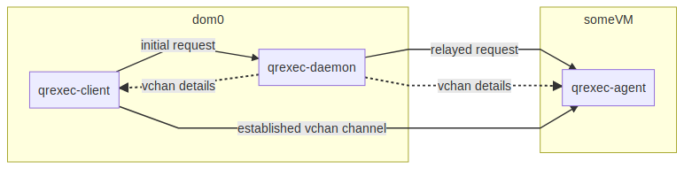

Qrexec: secure communication across domains
(This page is about qrexec v3. For qrexec v2, see here .)
The qrexec framework is used by core Qubes components to implement communication between domains. Qubes domains are strictly isolated by design. However, the OS needs a mechanism to allow the administrative domain (dom0) to force command execution in another domain (VM). For instance, when a user selects an application from the KDE menu, it should start in the selected VM. Also, it is often useful to be able to pass stdin/stdout/stderr from an application running in a VM to dom0 (and the other way around). (For example, so that a VM can notify dom0 that there are updates available for it). By default, Qubes allows VMs to initiate such communications in specific circumstances. The qrexec framework generalizes this process by providing a remote procedure call (RPC) for the Qubes architecture. It allows users and developers to use and design secure inter-VM tools.
Qrexec basics: architecture and examples
Qrexec is built on top of vchan, a Xen library providing data links between VMs. During domain startup, a process named qrexec-daemon is started in dom0, and a process named qrexec-agent is started in the VM. They are connected over a vchan channel. qrexec-daemon listens for connections from a dom0 utility named qrexec-client. Let’s say we want to start a process (call it VMprocess) in a VM (someVM). Typically, the first thing that a qrexec-client instance does is to send a request to the qrexec-daemon, which in turn relays it to qrexec-agent running in someVM. qrexec-daemon assigns unique vchan connection details and sends them to both qrexec-client (in dom0) and qrexec-agent (in someVM). qrexec-client starts a vchan server, which qrexec-agent then connects to. Once this channel is established, stdin/stdout/stderr from the VMprocess is passed between qrexec-agent and the qrexec-client process.

The qrexec-client command is used to make connections to VMs from dom0. For example, the following command creates an empty file called hello-world.txt in the home folder of someVM:
$ qrexec-client -e -d someVM user:'touch hello-world.txt'
The string before the colon specifies which user will run the command. The -e flag tells qrexec-client to exit immediately after sending the execution request and receiving a status code from qrexec-agent (if the process creation succeeded). With this option, no further data is passed between the domains. The following command demonstrates an open channel between dom0 and someVM (in this case, a remote shell):
$ qrexec-client -d someVM user:bash
The qvm-run command is heavily based on qrexec-client. It also handles additional activities, e.g. starting the domain if the domain is not up yet and starting the GUI daemon. It is usually more convenient to use qvm-run.
There can be an almost arbitrary number of qrexec-client processes for a given domain. The limiting factor is the number of available vchan channels, which depends on the underlying hypervisor, as well the domain’s OS.
For more details on the qrexec framework and protocol, see “Qubes RPC internals.”
Qubes RPC services
Some common tasks (like copying files between VMs) have an RPC-like structure: a process in one VM (say, the file sender) needs to invoke and send/receive data to some process in other VM (say, the file receiver). The Qubes RPC framework was created to securely facilitate a range of such actions.
Inter-VM communication must be tightly controlled to prevent one VM from taking control of another, possibly more privileged, VM. The design decision was made to pass all control communication via dom0 which can enforce proper authorization. It is therefore natural to reuse the already-existing qrexec framework.
Note that bare qrexec provides VM <-> dom0 connectivity, but the command execution is always initiated by dom0. There are cases when a VM needs to invoke and send data to a command in dom0 (e.g. to pass information on newly installed .desktop files). This framework allows dom0 to be the RPC target as well.
Thanks to the framework, RPC programs are very simple – both RPC client and server just use their stdin/stdout to pass data. The framework does all the inner work to connect the processes to eachother via qrexec-daemon and qrexec-agent. Disposable VMs are tightly integrated – RPC to a DisposableVM is identical to RPC to an AppVM or StandaloneVM: all one needs is to pass @dispvm as the remote domain name.
Qubes RPC administration
Policy files
/etc/qubes/policy.d/ and /run/qubes/policy.d/ contain files that set policy for each available RPC action that a VM might call. For example, /etc/qubes/policy.d/90-default.policy contains the default policy settings./etc/qubes/policy.d/30-user.policy./etc/qubes/policy.d/30-user.policy, or you may choose to have multiple files, like /etc/qubes/policy.d/10-copy.policy, /etc/qubes/policy.d/10-open.policy./run/qubes/policy.d/ and /etc/qubes/policy.d/ with the same name, it isn’t specified which takes precedence, so you should avoid this situation.Policies are defined in lines with the following format:
service-name|* +argument|* source destination action [options]
You can specify the source and destination by name or by one of the reserved keywords such as *, @dispvm, or dom0. (Of these three, only * keyword makes sense in the source field. Service calls from dom0 are currently always allowed, and @dispvm means “new VM created for this particular request,” so it is never a source of request.) Other methods using tags and types are also available (and discussed below).
Whenever a RPC request for an action is received, the domain checks the first matching line of the files in /etc/qubes/policy.d/ and /run/qubes/policy.d/ to determine access: whether to allow the request, what VM to redirect the execution to, and what user account the program should run under. Note that if the request is redirected (target= parameter), policy action remains the same – even if there is another rule which would otherwise deny such request. If no policy rule is matched, the action is denied.
Files in /run/qubes/policy.d/ are deleted when the system is rebooted. This is useful for temporary policy that contains the name or UUID of a disposable VM, which will not be meaningful after the system has rebooted. Such policy files can be created manually, but they are usually created automatically by a qrexec call to dom0.
Making an RPC call
From outside of dom0, RPC calls take the following form:
$ qrexec-client-vm target_vm_name RPC_ACTION_NAME rpc_client_path client arguments
For example:
$ qrexec-client-vm work qubes.StartApp+firefox
Note that only stdin/stdout is passed between RPC server and client – notably, no command line arguments are passed. By default, stderr of client and server is logged in the syslog/journald of the VM where the process is running.
It is also possible to call service without specific client program – in which case server stdin/out will be connected with the terminal:
$ qrexec-client-vm target_vm_name RPC_ACTION_NAME
Answering an RPC call
In order for a RPC call to be answered in the target VM, a file in either of the following locations must exist, containing the file name of the program that will be invoked, or being that program itself – in which case it must have executable permission set (chmod +x):
/etc/qubes-rpc/RPC_ACTION_NAMEwhen you make it in the template qube;/usr/local/etc/qubes-rpc/RPC_ACTION_NAMEfor making it only in an app qube.
The source VM name can then be accessed in the server process via QREXEC_REMOTE_DOMAIN environment variable. (Note the source VM has no control over the name provided in this variable–the name of the VM is provided by dom0, and so is trusted.)
RPC services and security
Be very careful when coding and adding a new RPC service. Unless the offered functionality equals full control over the target (it is the case with e.g. qubes.VMShell action), any vulnerability in an RPC server can be fatal to Qubes security. On the other hand, this mechanism allows to delegate processing of untrusted input to less privileged (or disposable) AppVMs, thus wise usage of it increases security.
For example, this command will run the firefox command in a DisposableVM based on work:
$ qvm-run --dispvm=work firefox
By contrast, consider this command:
$ qvm-run --dispvm=work --service qubes.StartApp+firefox
This will look for a firefox.desktop file in a standard location in a DisposableVM based on work, then launch the application described by that file. The practical difference is that the bare qvm-run command uses the qubes.VMShell service, which allows you to run an arbitrary command with arbitrary arguments, essentially providing full control over the target VM. By contrast, the qubes.StartApp service allows you to run only applications that are advertised in /usr/share/applications (or other standard locations) without control over the arguments, so giving a VM access to qubes.StartApp is much safer. While there isn’t much practical difference between the two commands above when starting an application from dom0 in Qubes 4.0, there is a significant security risk when launching applications from a domU (e.g., from a separate GUI domain). This is why qubes.StartApp uses our standard qrexec argument grammar to strictly filter the permissible grammar of the Exec= lines in .desktop files that are passed from untrusted domUs to dom0, thereby protecting dom0 from command injection by maliciously-crafted .desktop files.
Service policies with arguments
Sometimes a service name alone isn’t enough to make reasonable qrexec policy. One example of such a situation is qrexec-based USB passthrough. Using just a service name would make it difficult to express the policy “allow access to devices X and Y, but deny to all others.” It isn’t feasible to create a separate service for every device: we would need to change the code in multiple files any time we wanted to update the service.
For this reason it is possible to specify a service argument, which will be subject to a policy. A service argument can make service policies more fine-grained. With arguments, it is easier to write more precise policies using the “allow” and “deny” actions, instead of relying on the “ask” method. (Writing too many “ask” policies offloads additional decisions to the user. Generally, the fewer choices the user must make, the lower the chance to make a mistake.)
The argument is specified in the second column of the policy line, as +ARGUMENT. If the policy uses “*” as an argument, then it will match any argument (including no argument). As rules are processed in order, any lines with a specific argument below the line with the wildcard argument will be ignored. So for instance, we might have policies which are different depending on the argument:
Device +device1 * * allow
Device +device2 * * deny
Device * * * ask
When calling a service that takes an argument, just add the argument to the service name separated with +.
$ qrexec-client-vm target_vm_name RPC_ACTION_NAME+ARGUMENT
The script will receive ARGUMENT as its argument. The argument will also become available as the QREXEC_SERVICE_ARGUMENT environment variable. This means it is possible to install a different script for a particular service argument.
See RPC service with argument (file reader) for an example of an RPC service using an argument.
Qubes RPC examples
To demonstrate some of the possibilities afforded by the qrexec framework, here are two examples of custom RPC services.
Simple RPC service (addition)
We can create an RPC service that adds two integers in a target domain (the server, call it “anotherVM”) and returns back the result to the invoker (the client, “someVM”). In someVM, create a file with the following contents and save it with the path /usr/bin/our_test_add_client:
#!/bin/sh
echo $1 $2 # pass data to RPC server
exec cat >&$SAVED_FD_1 # print result to the original stdout, not to the other RPC endpoint
Our server will be anotherVM at /usr/bin/our_test_add_server. The code for this file is:
#!/bin/sh
read arg1 arg2 # read from stdin, which is received from the RPC client
echo $(($arg1+$arg2)) # print to stdout, which is passed to the RPC client
We’ll need to create a service called test.Add with its own definition and policy file in dom0. Now we need to define what the service does. In this case, it should call our addition script. We define the service with a symlink at /etc/qubes-rpc/test.Add pointing to our server script (the script can be also placed directly in /etc/qubes-rpc/test.Add - make sure the file has executable bit set!):
$ ln -s /usr/bin/our_test_add_server /etc/qubes-rpc/test.Add
The administrative domain will direct traffic based on the current RPC policies. In dom0, create a file at /etc/qubes/policy.d/30-test.policy containing the following:
test.Add * * * ask
This will allow our client and server to communicate.
Before we make the call, ensure that the client and server scripts have executable permissions. Finally, invoke the RPC service.
$ qrexec-client-vm anotherVM test.Add /usr/bin/our_test_add_client 1 2
We should get “3” as answer. (dom0 will ask for confirmation first.)
Note: For a real world example of writing a qrexec service, see this blog post.
RPC service with argument (file reader)
Here we create an RPC call that reads a specific file from a predefined directory on the target. This example uses an argument to the policy. In this example a simplified workflow will be used. The service code is placed directly in the service definition file on the target VM. No separate client script will be needed.
First, on your target VM, create two files in the home directory: testfile1 and testfile2. Have them contain two different “Hello world!” lines.
Next, we define the RPC service. On the target VM, place the code below at /etc/qubes-rpc/test.File:
#!/bin/sh
argument="$1" # service argument, also available as $QREXEC_SERVICE_ARGUMENT
if [ -z "$argument" ]; then
echo "ERROR: No argument given!"
exit 1
fi
cat "/home/user/$argument"
Make sure the file is executable! (The service argument is already sanitized by qrexec framework. It is guaranteed to not contain any spaces or slashes, so there should be no need for additional path sanitization.)
Now we create the policy file in dom0, at /etc/qubes/policy.d/30-test.policy. The contents of the file are below. Replace “source_vm1” and others with the names of your own chosen domains.
test.File +testfile1 source_vm1 target_vm allow
test.File +testfile2 source_vm2 target_vm allow
test.File * * * deny
With this done, we can run some tests. Invoke RPC from source_vm1 via
[user@source_vm1] $ qrexec-client-vm target_vm test.File+testfile1
We should get the contents of /home/user/testfile1 printed to the terminal. Invoking the service from source_vm2 should result in a denial, but testfile2 should work.
[user@source_vm2] $ qrexec-client-vm target_vm test.File+testfile1
Request refused
[user@source_vm2] $ qrexec-client-vm target_vm test.File+testfile2
And when invoked with other arguments or from a different VM, it should also be denied.